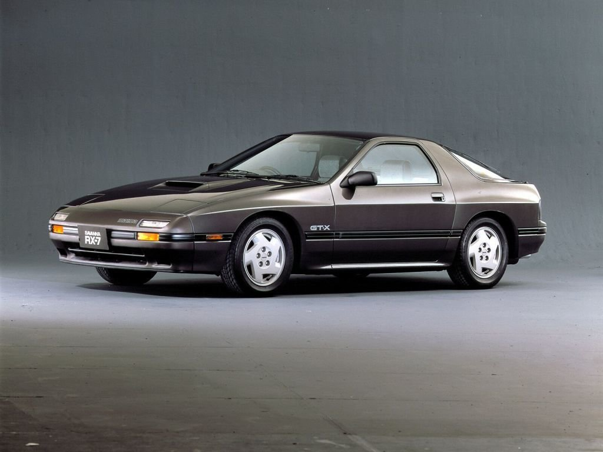

Відчуй дух справжньої японської класики
Як зрозуміти тих, хто сильно любить свої старі спортивні автомобілі? Потрібно хоч раз проїхатися на них,
провести пару ночей в гаражі, витратити десяток годин на пошуки тюнінгу в Інтернеті, кілька днів поїздити
по магазинах запчастин. Відчути цю спрагу, прагнення відновити і довести до ідеалу свою машину, свою мрію.
Буквально своїми руками зібрати її заново, переробити, доопрацювати і довести до такого стану, коли складно
буде повірити в те, що це машина з минулого століття.
Як придбати автомобіль з Японії?
- Підбір вживаних автомобілів на аукціоні (вторинний ринок).
- Діагностика і детальна перевірка авто.
- Купівля на аукціоні, збір і оформлення документів.
- Доставка / перегін в Україну і оформлення ТЗ.
- Оформлення.
Останні привезені автомобілі в Україну
| Рік Випуску | Об'єм двигуна | Ціна | Пробіг | |
| Nissan 200sx | 1992 | 2.0 | 16 000$ | 120 000 km |
| Mazda RX-7 | 2000 | 1.8 | 20 000$ | 80 000 km |
| Toyota Supra | 2002 | 3.0 | 45 000$ | 150 000 km |
| Subaru Impreza 22B STI | 1996 | 2.5 | 90 000$ | 30 000 km |